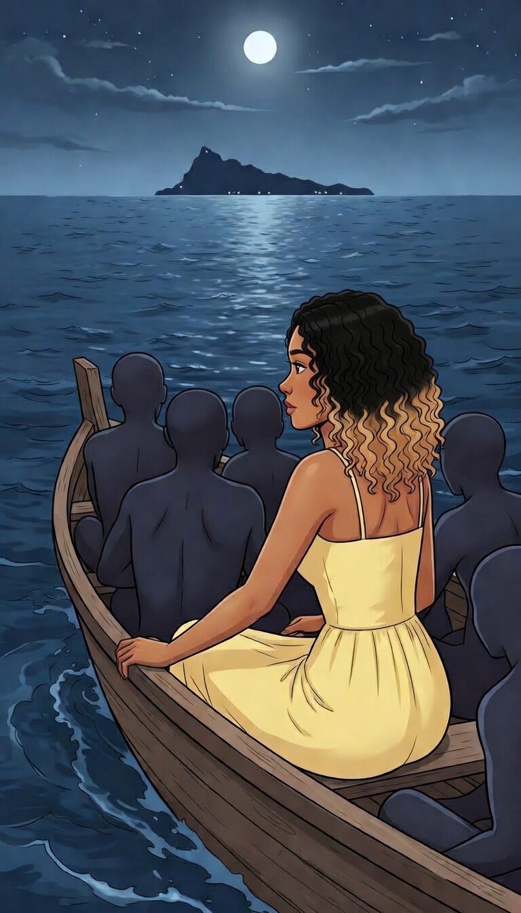
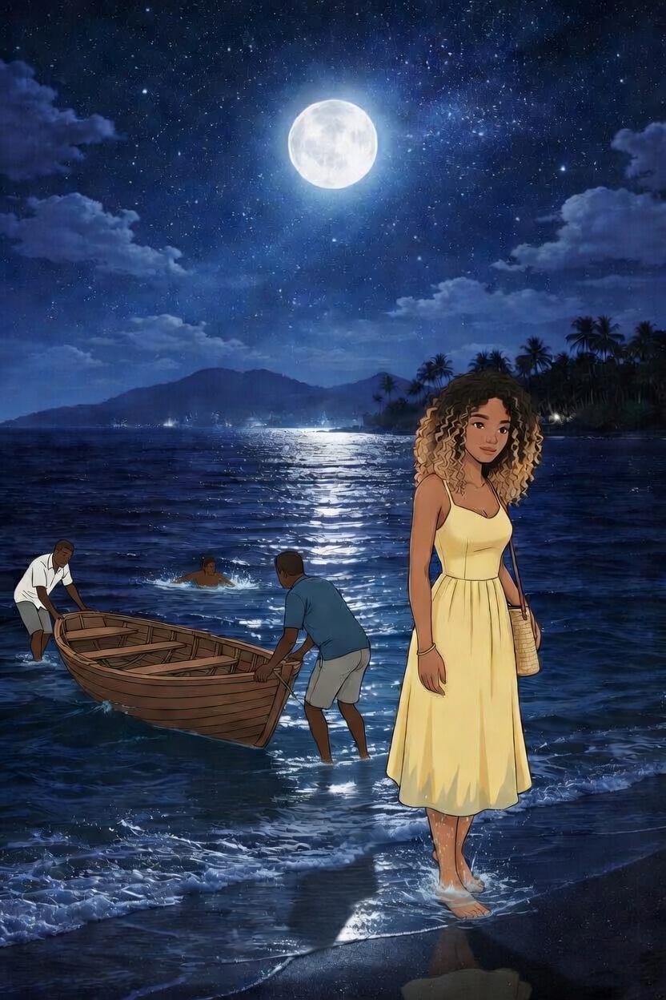
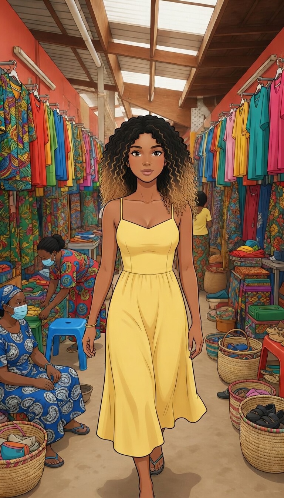
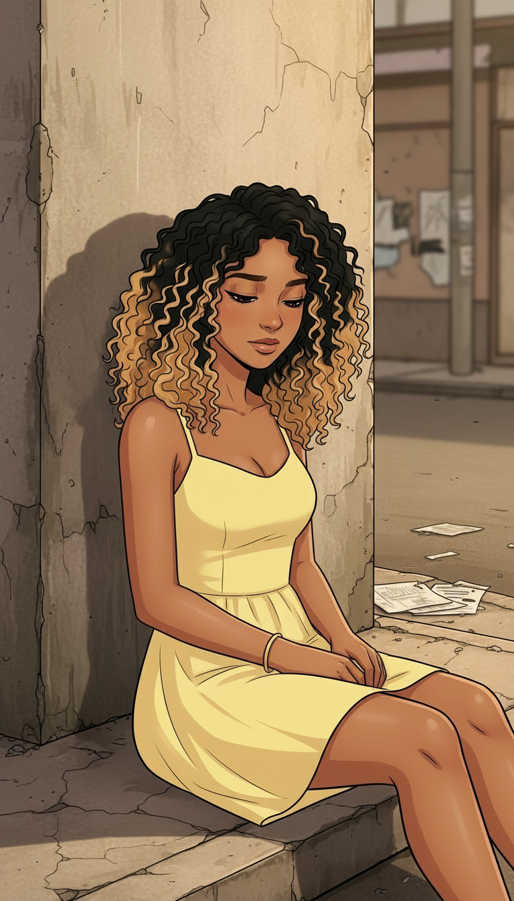
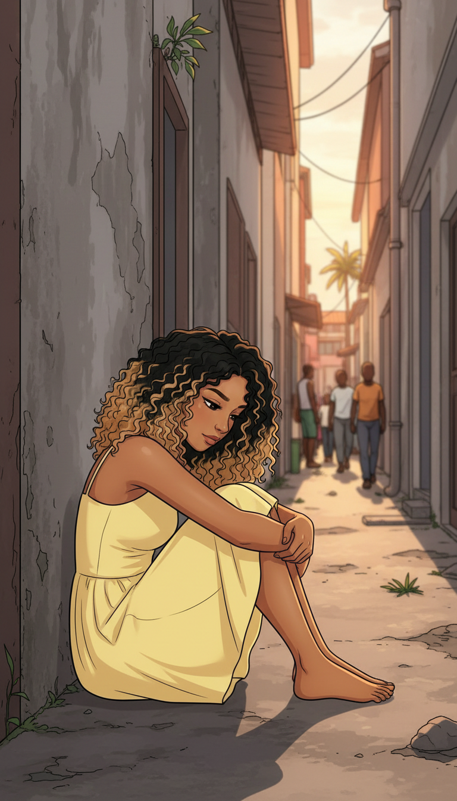
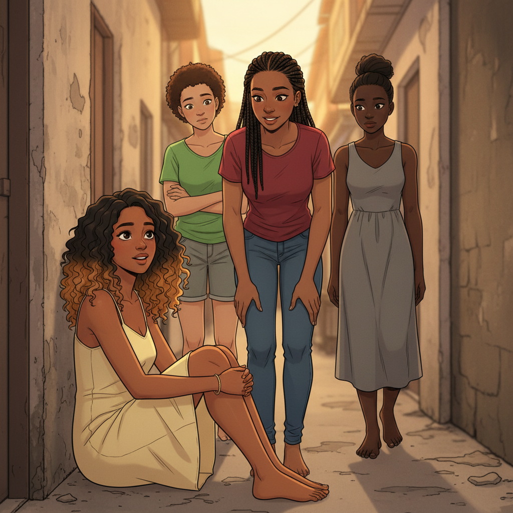
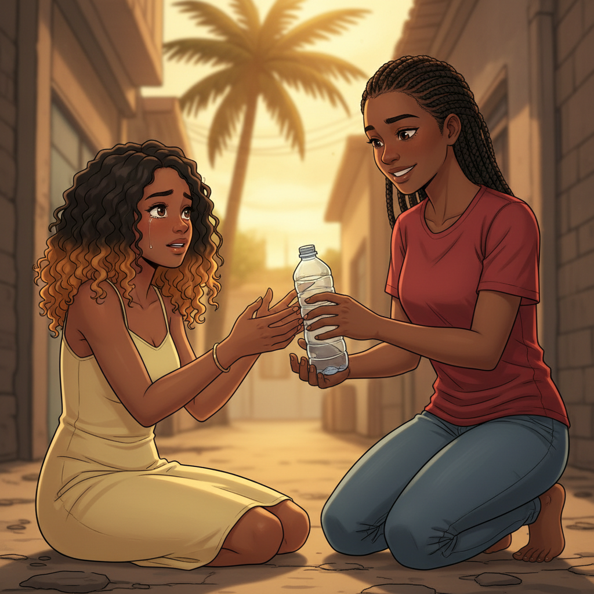
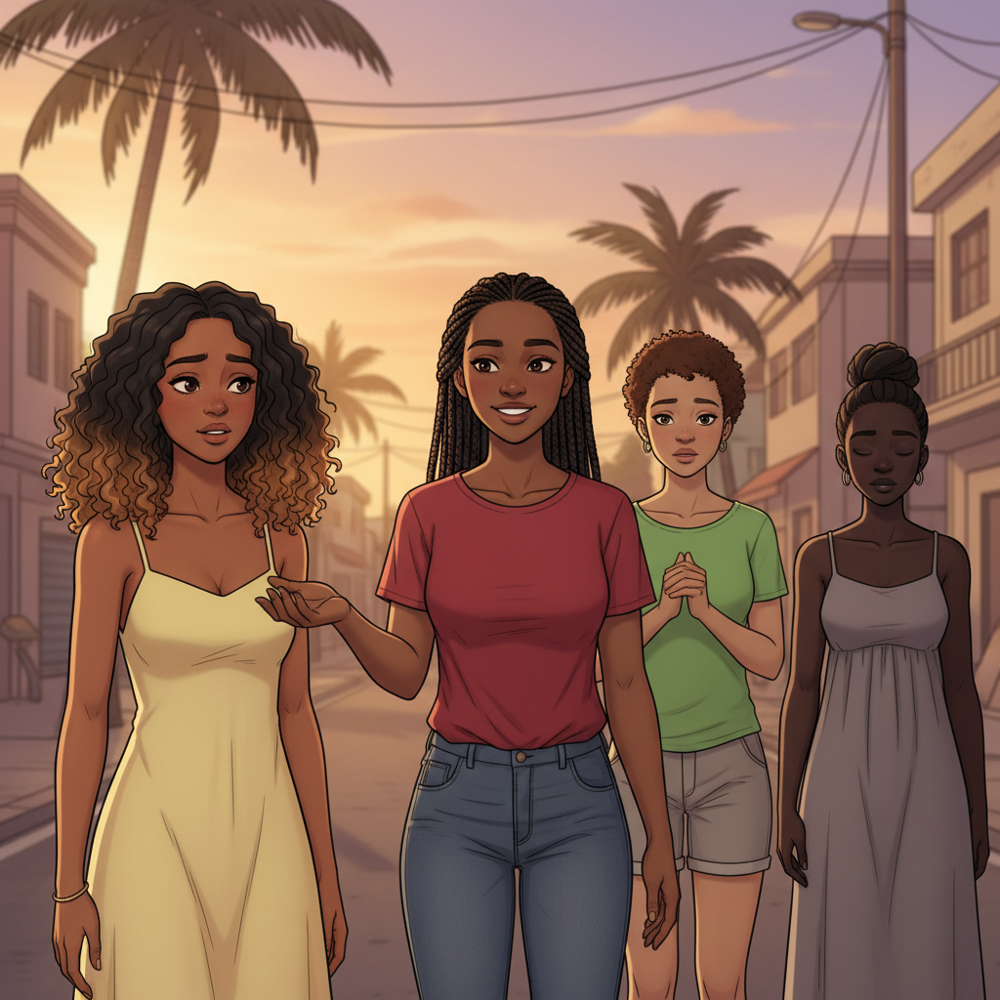
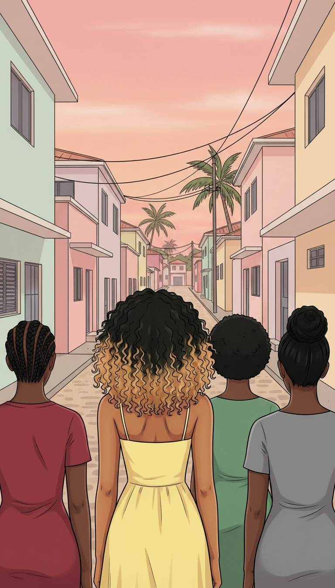
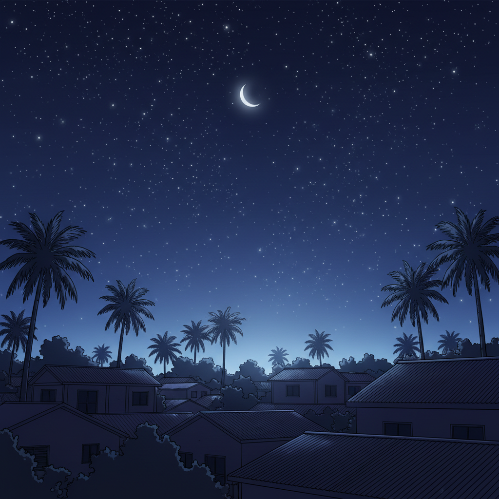

"Je m'appelle Maria. J'avais 20 ans et je traversais la mer dans le noir, sur un kwassa-kwassa trop petit pour vingt personnes. Je ne savais pas nager. Mais quand on n'a plus rien à perdre, la mer fait moins peur."
~ ~ ~

"On m'avait dit : Mayotte, c'est la chance. Du travail, une vie possible. Je voulais y croire."

"Mes pieds ont touché le sable de Mayotte à l'aube. Un sol étranger. Un nouveau départ. C'est ce que je me disais."

"Mamoudzou. La ville grondait autour de moi. Je répétais les noms dans ma tête comme si ça m'aiderait à m'y retrouver. Ça ne m'aidait pas."
RUMBLE...

"La faim. La soif. La peur. Tout en même temps. J'avais besoin d'aide — n'importe quelle aide."
Je n'ai plus d'argent, plus de force... Qu'est-ce que je vais devenir ?

"Le soir tombait. Je n'avais nulle part où aller. J'étais prête à accepter n'importe quoi."

"C'est là qu'elles sont arrivées."
Hé... ça va ? T'as l'air perdue.

Tiens, bois. T'as l'air d'en avoir besoin.
Merci... merci beaucoup...

"J'étais épuisée. Seule. Et quelqu'un m'offrait un toit. Dans cet état-là, on n'analyse pas. On accepte."
T'as nulle part où aller ? Viens avec nous, on a de la place.
Vraiment ? Vous feriez ça pour moi ?
Entre filles, on s'entraide.

"Pour la première fois depuis mon arrivée, je n'étais plus seule. J'aurais dû me demander pourquoi ces filles aidaient une étrangère. Je ne me suis pas posé la question."
TAP TAP

"Cette nuit-là, j'ai dormi sous un toit pour la première fois depuis mon arrivée. Je ne savais pas encore que certains pièges ont des draps propres et des portes qui ferment bien."